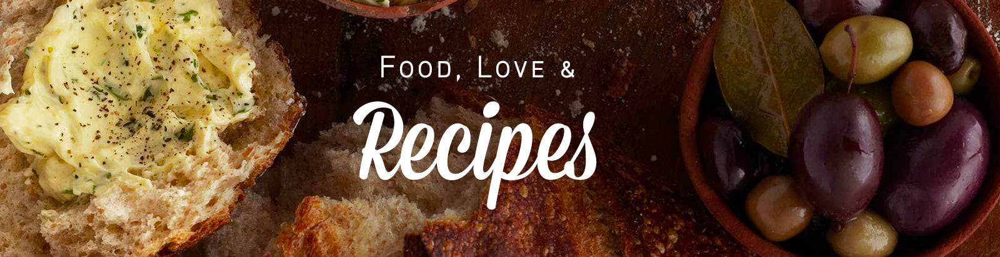

Elke Italiaanse nonna heeft haar eigen bologneserecept. Varieer er dus op los door bijvoorbeeld rode wijn toe te voegen.

Hoofdgerecht
4 Personen
645 kcal
30min. Bereiden
30min. Wachten
Ingrediënten
1 ui
250g winterpeen
1 stengel bleekselderij
2el olijfolie
25g boter
450g mager rundergehakt
6el runderbouillon (tablet)
800g tomatenblokjes (blik)
1el tomatenpuree
300g spaghetti
Bereiden
Verhit de olie met de boter in een pan. Voeg de gesnipperde ui, peen (in plakjes) en bleekselderij (in boogjes) toe en bak 5 min. Voeg het gehakt toe en bak het rul en bruin.
Roer de bouillon, tomatenblokjes en tomatenpuree erdoor. Breng op smaak met peper en zout. Laat de saus met de deksel op de pan 30 min. op laag vuur sudderen. Roer af en toe.
Kook ondertussen de spaghetti volgens de aanwijzingen op de verpakking. Verdeel de spaghetti over de borden en schep de saus erover.
Bereidingstip:Je kunt de saus een paar uur van tevoren bereiden. Hoe langer het suddert, hoe lekkerder het wordt! Eten er geen kinderen mee? Vervang de bouillon dan door witte wijn voor een extra volle smaak.